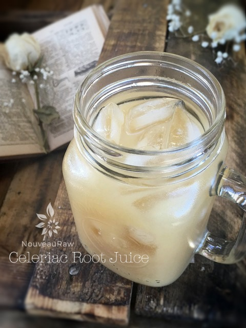

Celery Root – Celeriac – Juice

~ raw, vegan, gluten-free, nut-free, Paleo ~
Don’t judge celeriac by its cover. This winter vegetable is pretty downright wonderful!
This drink is a one-ingredient recipe; therefore, I am not even sure it can be classified as a recipe. But it is raw, it is healthy, and there is much to be learned from this simple one-ingredient wonder. I have been familiar with celeriac root for about five years now. I am sure I have seen in the produce department in the years prior, but I kept my distance.
It looks like a genetic abomination! I no longer fear strange-looking fruits and veggies; heck, I am more drawn to them these days. Celeriac root is also known as Celery root. It’s hairy; it’s dirty; it’s full of craters and crevasses that could make any grown man run for his momma! Haha, Celeriac is the underground starch-storing lower stem of a particular variety of a natural celery plant.
Did you know that the benefits of celery juice include ridding the body of toxins and stimulating kidney function, among many others? Overeating and the wrong kind of diet can place an enormous strain on the body. pH levels are thrown out of balance, and that disrupts the body’s metabolism and allows harmful toxins to accumulate. That is not a healthy path to be on. The result can be kidney and bladder problems, a tendency toward kidney stones, gout, rheumatism, and arthritis. The benefits of celery root juice include its action as a diuretic, its ability to help neutralize the pH balance, and its stimulation of the kidneys, which helps rid the body of toxins.
Many people find the benefits of celery root juice extend to a variety of other illnesses as well, including asthma, constipation, fever, fluid retention, headache, inflammation, insomnia, migraines, nervous problems, and weight loss. It also provides a significant source of potassium, which is excellent for hydrated and healthy skin. The list goes on!
So just what does celeriac juice taste like? The best way I can describe it is, it is similar to the taste of V8 juice, minus the tomato. There is a hint of celery, no doubt about that. It also has a little sweetness to it and can be somewhat compared to a parsnip. Shew, it is rather difficult to describe actually. I go back to the V8 comparison. Both Bob and I agree on that for sure. I provided measurements below, but that is just a guideline to show you that it took one good-sized celeriac root to create 1/2 cup juice. Keep in mind that this will always vary depending on the water content and freshness of your root.
Yields 1/2 cup juice
- 13 oz (weight) celeriac root
Preparation:
- Wash and peel the celeriac root with a potato peeler or paring knife. Chop into the appropriate size to fit in the chute of the juicer.
- Juice and drink right away!
How to select and store:
- Select celery roots that feel heavy for their size. If any greenery or bits of the stalk are discernible on the top of the root, they should be fresh looking and neither dried out nor slimy or wilted.
- Celery root is difficult to peel because of the hairy nooks and crannies, so look for ones with a smooth exterior as possible.
- If you see celeriac at the market with long bright green stalks still attached, snap them up! Freshly harvested celery root tends to be more tender and easier to peel.
- They store well and for an amazingly long time if kept cool. Celeriac loosely wrapped in plastic in the fridge will last up to several weeks, even longer if it was freshly harvested.
© AmieSue.com